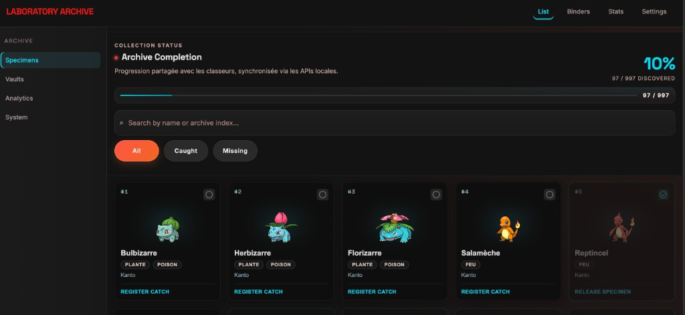
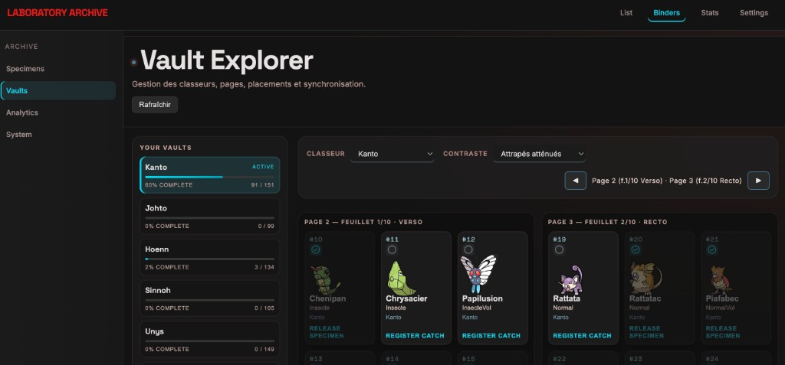
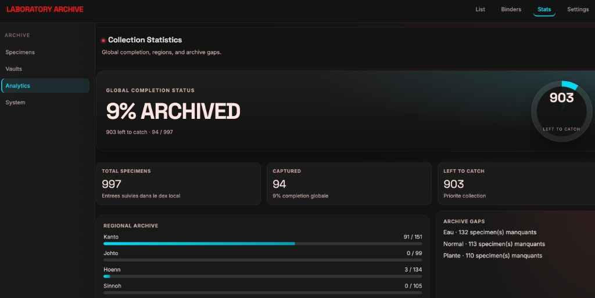

Pokedex-first
Cherche, J'ai and Double stay centered on each Pokemon entry so the main goal stays simple: complete your Pokedex.

Local-first Pokedex journey
Keep the old adventure loop: explore your collection, meet other Trainers through exchanged cards, and complete your Pokedex from one private local workspace.
Why it exists
Pokevault is built for the feeling of filling a Pokedex route after route: mark what you found, keep notes, compare with Dresseurs you meet, and keep every file on your machine.
Cherche, J'ai and Double stay centered on each Pokemon entry so the main goal stays simple: complete your Pokedex.
Meet other Trainers by importing their local card, then let Vu chez and Match reveal possible exchanges.
Model physical binders, 3×3 · 10 feuillets defaults, custom grids and printable checklists.
Export Trainer Cards manually, import received cards into a searchable contact book and keep every file local-first.
Screenshots


Quick start
git clone https://github.com/Boblebol/pokevault.git
cd pokevault
make install
make dev